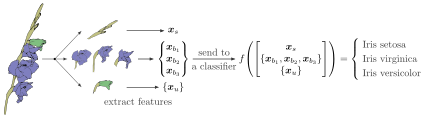

Mill.jl
Mill.jl is a library build on top of Flux.jl aimed to flexibly prototype hierarchical multi-instance learning models as described in Tomáš Pevný , Petr Somol (2017) and Tomáš Pevný , Petr Somol (2016)
What is Multiple instance learning (MIL) problem?
Why should I care about MIL problems? Since the seminal paper of Ronald Fisher, the majority of machine learning problems deals with a problem shown below,

where the input sample $x$ is a vector (or more generally a tensor) of a fixed dimension, alterantivelly a sequence.
The consequence is that if we want to classify the iris aboce, and we want to use features describing its leafs, blossoms, etc, we will have a hard time, since every flower has different number of them. This implies that to use the usual "fix dimension" paradigm, we have to either use features from a single flower and single leaf, or aggregate the description of their set, such that the output has a fixed dimension. This is clearly undesirable, as we would like a framework that can flexibly and automatically deals with these nuisances.
In Multiple instance learning the sample $x$ is a set of vectors (or matrices) $\{x_1,\ldots,x_l\}$ with $x_i \in R^d$, which means that order does not matter, and which is also the feature making MIL problems different from sequences. The multi-instance problems have been introduced in by Tom Diettrich in Thomas G. Dietterich , Richard H. Lathrop , Tomás Lozano-Pérez (1997) in 1997, and extended and generalized in a series of works Tomáš Pevný , Petr Somol (2017), Tomáš Pevný , Petr Somol (2016), Tomáš Pevný , Vojtěch Kovařík (2019). The most comprehensive introduction known to authors is Šimon Mandlík (2020)
The Hierarchical Multiple instance learning would approach the problem of iris classification as outlined below.

It will describe each leafs by a vector implying that all leaves are described bu a set of vectors. The same will be done for blossoms. Note that such description allows each flower to have a different numbers of each entity. Finally, there will be a single vector describing a stem, since there is only one.
How does the MIL copes with variability in number of flowers and leafs (in MIL parlance they are called instances and their set is called a bag)? For each MIL problem, there are two feed-forward neural networks with element-wise aggregation operator like mean (or maximum) sandwiched between them. Denoting those feed-forward networks (FFN) by $f_1$ and $f_2$, the output of a bag calculated is calculated as $f_2 \left\(\frac{1}{l}\sum_{i=1}^l f_1(x_i) \right\)$, where we have used mean as an aggregation function. In Tomáš Pevný , Vojtěch Kovařík (2019), authors have further extended the universal approximation theorem to MIL problems, their Cartesian products, and nested MIL problems, i.e. a case where instances of one bag are in fact bags.
This means that the flower in the above Iris example would be described by one bag describing leafs, another bag describing blossoms, and a vector describing stem. The HMIL model would have two FFNs to convert set of leafs to a single vector, another set of two FFNs to convert set of blossoms to a single vector. These two outputs would be concatenated with a description of a stem, which would be fed to yet another FFN providing the final classifications. And since whole scheme is differentiable, we can use standard SGD to optimize all FFNs together using only labels on the level of output.
The Mill library simplifies implementation of machine learning problems with (H)MIL representation. In theory, it can represent any problem that can be written represented in JSONs. That is why we have created a separate tool, JsonGrinder, which helps to Mill your JSONs.
Relation to Graph Neural Networks
HMIL problems can be seen as a special subset of general graphs. They differ in two important ways
- In general graphs, vertices are of a small number of semantic type, whereas in HMIL problems, the number of semantic types of vertices is much higher (it is helpful to think about HMIL problems as about those for which JSON is a natural representation).
- The computational graph of HMIL is a tree, which implies that there exist an efficient inference. Contrary, in general graphs (with loops) there is no efficient inference and one has to resort to message passing (Loopy belief propagation).
- One update message in loopy belief propagation can be viewed as a MIL problem, as it has to produce a vector based on infomation inthe neighborhood, which can contain arbitrary number of vertices.
A more detailed overview of this subject can be found in Šimon Mandlík (2020).
References
- Pevny2018a
-
Tomáš Pevný , Petr Somol (2017), Discriminative models for multi-instance problems with tree-structure, arXiv:1703.02868 [].
- Pevny2018b
Tomáš Pevný , Petr Somol (2016), Using Neural Network Formalism to Solve Multiple-Instance Problems, arXiv:1609.07257 [].- Dietterich1997
Thomas G. Dietterich , Richard H. Lathrop , Tomás Lozano-Pérez (1997), Solving the multiple instance problem with axis-parallel rectangles, Artificial Intelligence, 89(1), 31 - 71, 1997.- Zaheer2018
Manzil Zaheer , Satwik Kottur , Siamak Ravanbakhsh , Barnabás Póczos , Ruslan Salakhutdinov , Alexander J. Smola (2017), Deep Sets, arXiv:1703.06114 [].- Mandlik2020
Šimon Mandlík (2020), Mapping the Internet: Modelling Entity Interactions in Complex Heterogeneous Networks, Master's thesis, Czech Technical University, 2020.- Pevny2019
Tomáš Pevný , Vojtěch Kovařík (2019), Approximation capability of neural networks on spaces of probability measures and tree-structured domains, arXiv:1906.00764 [].Settings
This document was generated with Documenter.jl on Monday 14 December 2020. Using Julia version 1.5.3.